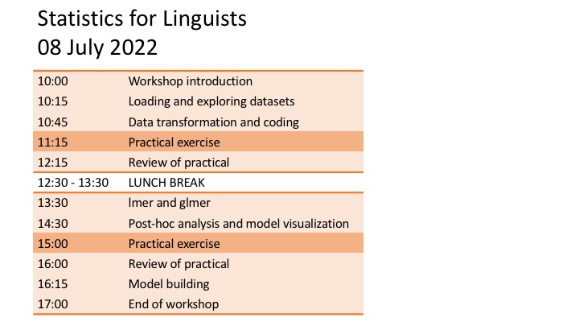

<body>

<p>
<center>

</center>
</p>

<p>
 <h3>Materials</h3>
        <ul> 
          <li><a href="Loading and exploring datasets.pdf">Loading and exploring datasets</a> slides</li>
          <li><a href="Data transformation and coding.pdf">Data transformation and coding</a> slides</li>
          <li><a href="Practical exercise 1.pdf">Practical exercise 1</a> slides</li>
          <li><a href="Practical exercise 1.R"> Practical exercise 1</a> script</li>
          <li><a href="lmer and glmer.pdf">lmer and glmer</a> slides</li>
          <li><a href="Post-hoc analysis and model visualization.pdf">Post-hoc analysis and model visualization</a> slides</li>
          <li><a href="Practical exercise 2.pdf">Practical exercise 2</a> slides</li>
          <li><a href="Practical exercise 2.R"> Practical exercise 2</a> script</li>
          <li><a href="Model building.pdf">Model building</a> slides</li>
          <li>Practical exercises: <a href="psycholinguistics_data.csv"> psycholinguistics_data.csv</a> data file</li>      
        </ul>
Contact: Margreet Vogelzang, mv498@cam.ac.uk
 </p>
 
</body>
